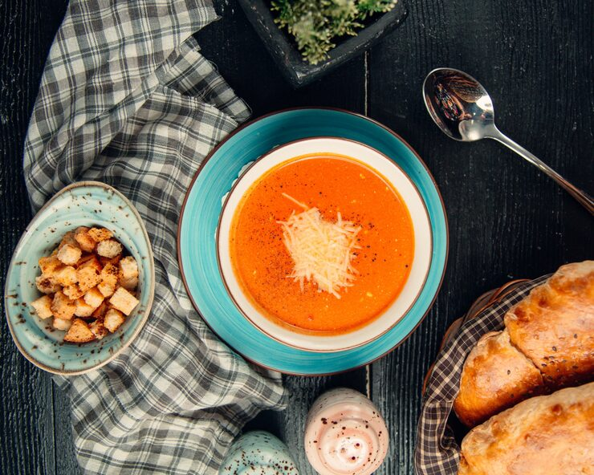

Roasted Red Pepper Soup

Ingredients
6 red bell or pointed peppers, (around 6 peppers)
1 yellow onion
5 sun dried tomatoes, jarred
4 garlic cloves, peeled and whole
1 squeeze lemon juice (around 1/2 tbsp)
2.5 cups vegetable stock, (600ml)
salt and pepper, to season
1 tbsp olive oil
1-2 tbsp homemade pesto
creme fraiche, for topping
Directions
Step 1 Pre-heat the oven to 200°C (400°F).
Step 2 Roughly chop the red peppers and place in a large baking tray with peeled whole garlic cloves. Drizzle with olive oil and sprinkle with salt and pepper then roast in the oven until slightly charred (around 40 minutes).
Step 3 Finely chop a white (yellow) onion and saute in a large pot with a little olive oil until translucent and soft. Once soft, add the roasted peppers and garlic, sun dried tomatoes and vegetable stock.
Step 4 Simmer for 10 minutes then turn off the heat and blend until completely smooth using an immersion blender. Taste for seasoning, I only add pepper because there's enough saltiness from the stock and sun dried tomatoes and pre seasoned peppers.
Step 5 Add a small splash of freshly squeezed lemon juice, stir and serve with a drizzle of creme fraiche and homemade pesto. Grab a hunk of crusty bread and dive in.
Step 6 Slurp slurp and enjoy!
Step 7 Save the left overs, haha jk there will be no left overs.